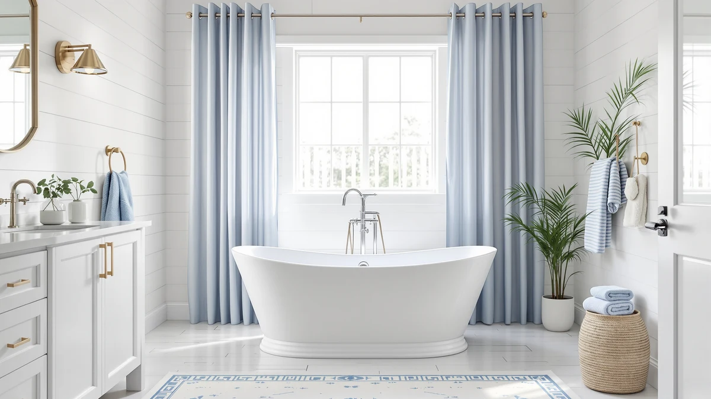

Freestanding Jetted Bathtub 71 Review (2026): Worth It?
Prices and picks verified as of September 2026. Independent, reader-supported reviews.


Quick Answer
In this freestanding jetted bathtub 71 review, the EliteEdge is the tub to buy if you want built-in hydrotherapy jets and the extra length to stretch out fully at 71 inches. It is also the most expensive tub here, costing $100 to $250 more than the three jet-free alternatives we compare it to, and it requires a dedicated GFCI circuit that those tubs skip. If jets are not a priority, the MEDUNJESS, Lajeri, or FerdY below cost less and install more simply.
Our pick: Freestanding Jetted Bathtub 71 inch, $1,599.99 Check Price on Amazon
Bottom line: our top pick is the Freestanding Jetted Bathtub 71 inch at $1,599.99.
Things to Know Before You Buy
- This freestanding jetted bathtub 71 review compares jets and size against three non-jetted alternatives, since the EliteEdge is the only tub here with a built-in hydrotherapy jet system.
- At 71 inches, the EliteEdge is 6 to 12 inches longer than the MEDUNJESS, Lajeri, and FerdY tubs we compare it to, which matters most for bathers over six feet tall.
- Jetted tubs need a dedicated GFCI-protected circuit for the pump motor, a wiring requirement the three non-jetted alternatives in this review do not have.
- At $1,599.99 the EliteEdge costs $100 to $250 more than every other tub here, so the jets and extra length are what you are paying the premium for.
- None of the four tubs in this review ship with a faucet, so budget for that separately no matter which one you choose.
This freestanding jetted bathtub 71 review is for anyone deciding whether the EliteEdge's jet system and extra length justify a price that runs $100 to $250 above the three non-jetted tubs we compare it with. At 71 inches the EliteEdge is the longest tub in this review, and it is also the only one that comes with a jet system built in instead of a plain soaking shell. Below we work through what that combination gets you, where the extra money goes, and which of the three alternatives makes more sense if jets and length together are not worth the premium to you.
We built this review by comparing published specifications and current Amazon pricing for four freestanding tubs: the EliteEdge and three rivals from MEDUNJESS, Lajeri, and FerdY. The EliteEdge's $1,599.99 price sits at the top of that group, so the question worth answering is whether hydrotherapy jets and its extra length earn that gap, or whether a shorter, cheaper soaking tub covers what most bathrooms actually need.
Why You Should Trust Us
Ilane Tall has covered bathroom fixtures for this site for years, from toilet seats to freestanding tubs that cost more than a bathroom vanity. For this freestanding jetted bathtub 71 review, we compared the EliteEdge's published specifications and current Amazon pricing against three other freestanding tubs, the MEDUNJESS 65 inch, the Lajeri wooden soaking tub, and the FerdY Mauritius, weighing each one on size, price, and what it actually adds to a bathroom.
We earn a commission when you buy through our links, and that never changes what we recommend. When a tub carries a real drawback, like the EliteEdge's higher price or the plumbing a jet system requires, we say so directly instead of glossing over it.
Our Research Experience
For this freestanding jetted bathtub 71 review we focused on the two variables that separate the EliteEdge from its rivals: the jet system and the extra length. A 71 inch tub demands more floor space than the 65 inch MEDUNJESS or the 59 inch FerdY, so we checked how that length trades off against the smaller footprints of the other three tubs before looking at price.
Jets change the ownership picture beyond the sticker price. We researched what a hydrotherapy pump typically requires: a dedicated GFCI circuit, occasional access to the motor for maintenance, and a bit more operating noise than a plain soaking tub produces. None of the three alternatives here carry that requirement, since the MEDUNJESS, the Lajeri, and the FerdY are all soaking tubs without a jet system.
We also compared verified owner reviews and current Amazon pricing across all four tubs rather than relying on manufacturer claims alone, and we priced out what each purchase costs once you factor in that none of them include a faucet.
Price spread was the last thing we mapped out. The four tubs in this review span $250, from the FerdY's $1,349.99 up to the EliteEdge's $1,599.99, and that range does not move in a straight line with size. The EliteEdge is longest and priciest, but the Lajeri undercuts the MEDUNJESS despite a comparable price tier, which tells you the jet system, not length alone, drives most of the EliteEdge's premium.
Overview & Specs

Freestanding Jetted Bathtub 71 inch
What we like
- At 71 inches, it's the longest tub in this review, with room for taller bathers to stretch out fully
- Built-in jet system adds hydrotherapy that none of the three non-jetted alternatives offer
- Product photos show jet placement and shell design across four separate angles
Flaws but not dealbreakers
- At $1,599.99 it costs $100 to $250 more than every other tub in this review
- Jets require a dedicated GFCI circuit, adding electrical work most soaking tubs skip
- Material specs are not published the way they are for the acrylic and wood tubs we compare it to
| Material | — |
| Size | 71 inch |
The EliteEdge Freestanding Jetted Bathtub 71 inch is the only tub in this review built with a hydrotherapy jet system, and at 71 inches it is also the longest, giving a tall bather full-length room to stretch out that the 65 inch MEDUNJESS and 59 inch FerdY cannot match. That combination of length and jets is what separates it from the other three soaking tubs here, and it is also why it carries the highest price in the group.
At $1,599.99, the EliteEdge sits $100 above the MEDUNJESS, $204.00 above the Lajeri, and $250 above the FerdY. Before you commit to that premium, plan for the GFCI circuit a jet pump requires and confirm your bathroom has the floor length a 71 inch tub demands, since neither requirement applies to the three shorter, jet-free alternatives below.
What We Liked
The jet system is the clearest differentiator in this freestanding jetted bathtub 71 review. None of the three alternatives, the MEDUNJESS, the Lajeri, or the FerdY, include hydrotherapy jets, so if that feature matters to you, the EliteEdge is the only option here that delivers it.
Length works in its favor too. At 71 inches, it gives a bather over six feet tall room to lie flat, something the 65 inch MEDUNJESS and the 59 inch FerdY cannot offer. For a primary bathroom with the floor space to spare, that extra length changes how the tub feels during a soak, beyond what a spec sheet shows.
What Could Be Better
Price is the EliteEdge's biggest drawback. At $1,599.99 it costs more than every other tub in this review, and the gap runs as high as $250 against the FerdY. You are paying specifically for the jets and the extra length, not for a better-built shell.
The jet system also adds requirements the other three tubs do not have. You will need a dedicated GFCI circuit near the tub for the pump, which can mean extra electrical work during installation, and a jetted system means more moving parts to maintain over the tub's lifespan than a plain acrylic or wood soaking shell.
Published details on the EliteEdge's shell material are thinner than what MEDUNJESS, Lajeri, and FerdY list for their tubs, so if a specific material like acrylic or teak matters to your renovation plan, confirm it with the listing before you order rather than assuming it matches the alternatives here.
Who Is It For?
Buy the EliteEdge Freestanding Jetted Bathtub 71 inch if you want hydrotherapy jets and have the floor space and budget to support them. It suits a primary bathroom renovation where a taller bather needs the extra length and where the household is willing to pay $1,599.99 and cover the electrical work a jet pump requires.
Skip it if your bathroom is on the smaller side or you do not want the added complexity of a jet pump. The MEDUNJESS, Lajeri, and FerdY below all cost less, skip the electrical requirement, and still deliver a full soaking tub for bathrooms that do not need the extra length or the jets.
Renters and anyone furnishing a bathroom on a tight timeline should also look at the alternatives first. The EliteEdge's premium sits in construction and features meant to reward years of regular use, and a jet pump you rarely have wired in before moving out is a hard cost to justify.
Alternatives to Consider
If the EliteEdge's price or its jet system rules it out, the other three tubs in this freestanding jetted bathtub 71 review give you a plain soaking tub for less money. None of them include jets, but all three cost less and skip the GFCI wiring the EliteEdge requires.

Editor’s Pick
MEDUNJESS 65'' Free Standing Tub
The MEDUNJESS is six inches shorter than the EliteEdge and skips the jet system entirely, but at $1,499.00 it costs $100 less and still gives most bathers a full soaking tub without the electrical work a jet pump demands.
$1,499.00
Check Price on Amazon
Best Value
Lajeri Wooden Japanese Soaking Bathtub
The Lajeri trades jets and a molded shell for a wooden Japanese-style soaking design built for a deeper, more upright bath. At $1,395.99 it costs $204.00 less than the EliteEdge, though its shorter footprint suits a single bather more than someone who wants to stretch out.
$1,395.99
Check Price on Amazon
Premium Choice
FerdY 59" Mauritius Acrylic Freestanding
At $1,349.99 the FerdY is the cheapest tub in this review, with an acrylic shell and a 59 inch length that fits a tighter bathroom than the EliteEdge's 71 inches. You lose the jets and 12 inches of length, but you save $250.
$1,349.99
Check Price on AmazonIs the EliteEdge freestanding jetted bathtub 71 inch worth the extra $100 to $250 over the alternatives?
It depends on whether you want the jets.
Do I need special wiring for a jetted bathtub like the EliteEdge 71 inch?
Yes.
Frequently Asked Questions
Is the EliteEdge freestanding jetted bathtub 71 inch worth the extra $100 to $250 over the alternatives?
It depends on whether you want the jets. In this freestanding jetted bathtub 71 review, the EliteEdge is the only tub with a built-in hydrotherapy system, and it is also the longest at 71 inches. If neither of those matters to you, the MEDUNJESS, Lajeri, or FerdY all cost less and skip the jet pump's electrical requirements.
Do I need special wiring for a jetted bathtub like the EliteEdge 71 inch?
Yes. A jet pump needs a dedicated GFCI-protected circuit near the tub, which the three non-jetted alternatives in this review, the MEDUNJESS, the Lajeri, and the FerdY, do not require. Plan for that electrical work before you commit to the EliteEdge.
Which alternative is the best value if I skip the EliteEdge's jets?
The FerdY 59 inch Mauritius is the cheapest at $1,349.99, a savings of $250 off the EliteEdge, though it is also 12 inches shorter. The MEDUNJESS 65 inch splits the difference on both price and length if you want something closer to the EliteEdge's size without the jets.
Final Verdict
The verdict of this freestanding jetted bathtub 71 review: buy the EliteEdge if you want hydrotherapy jets and the extra length a 71 inch tub provides, and you are willing to pay $1,599.99 plus the electrical work a jet pump requires. If jets are not a priority, the MEDUNJESS, Lajeri, or FerdY all deliver a full soaking tub for less money and less installation complexity.